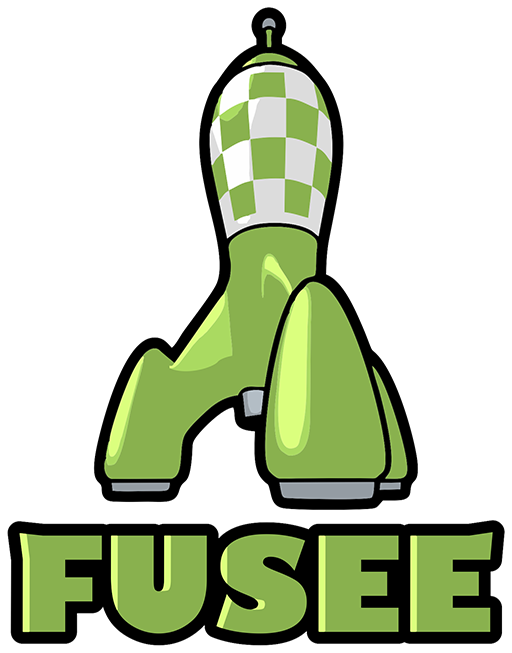

What's FUSEE?
FUSEE is an Open Source 3D Realtime Engine written in C#. Applications written on top of FUSEE can be published to a number of platforms.
Create 3D Content using Blender
3D Content displayed in FUSEE applications (Assets) can be generated using the free Blender 3D modelling software.
FUSEE comes with an export Add-on for Blender. Either save Blender contents as assets and access them from your C# code in your FUSEE app or generate an entire interactive web application directly from your Blender content without programming a single line of code.
Write 3D Apps with Visual Studio Code
Use the popular lightweight code editor to create FUSEE Apps, debug into your code and publish your App to the supported platforms. The generated code is built on top of .NET core, the Open Source platform independent variant among the different .NET implementations.
FUSEE comes with a .NET core template. Start writing FUSEE Apps within VS Code by
simply typing dotnet new fusee at the command line.
Publish Your App on different Platforms
.NET App. This will embed your application code into a .NET Framework 3D application and bundles all necessary files into one directory.
Android. Using Xamarin, your code will be transformed into a native Android apk. Currently, the Xamarin build is not integrated into the FUSEE Visual Studio Code build process. To create Android Apps from your FUSEE projects, you need to get the FUSEE sources from the FUSEE GitHub repository.